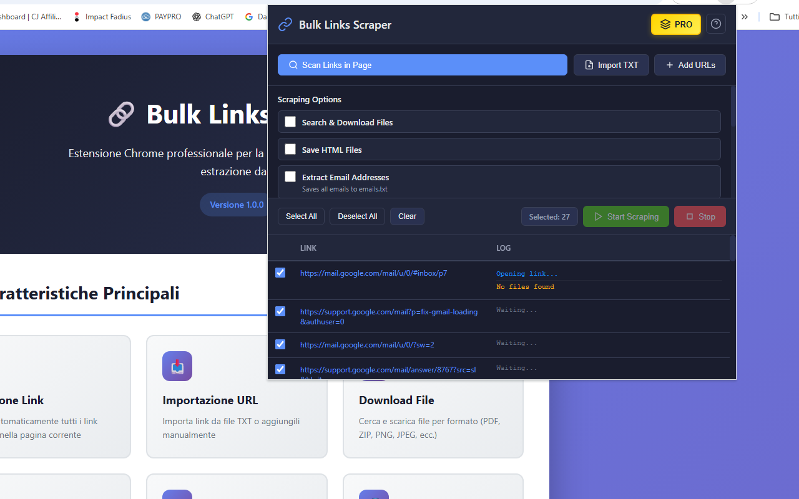
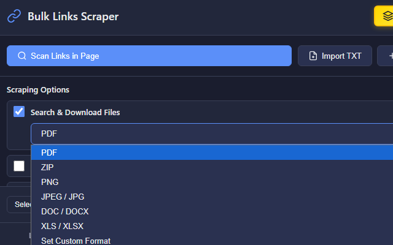

Bulk Links Scraper Extension
Imagine extracting data from hundreds of web pages with just a few clicks 🔗. With Bulk Links Scraper, that power is at your fingertips. This intelligent Chrome extension automates the tedious task of visiting multiple links to collect emails, phone numbers, images, files, and other data. Whether you're doing lead generation, SEO analysis, research, or content curation, Bulk Links Scraper transforms hours of manual work into minutes of automated efficiency.
No more opening dozens of tabs or copying and pasting information manually. The extension allows you to scan links from any page, import your own URL lists, and process them automatically one by one. With 8 powerful extraction options, you can gather exactly the data you need while the extension works in the background. Everything happens through a sleek, dark-themed interface that shows real-time progress and detailed logs of what's being found.
One of the standout features is the versatility of extraction options 📊. Need to collect email addresses from 100 contact pages? Done. Want to download all PDFs from a list of research papers? Easy. Looking to analyze meta tags across competitor websites? No problem. The extension handles it all with precision, organizing results into clean TXT files and managing file downloads automatically. You can even use custom regex patterns to find specific data formats unique to your needs.
Managing large-scale scraping is effortless. Select the links you want to process, choose your extraction options, and hit start. The extension opens each link sequentially (to avoid overloading your browser), extracts the specified data, and logs everything in real-time. You'll see exactly what's being found on each page, with color-coded logs showing successes, warnings, and any issues encountered. Your data stays persistent too—close the extension and come back later, your links and settings will still be there.
📖 How to Use
- Install the extension from the Chrome Web Store
- Navigate to any webpage with links, or prepare your own URL list.
- Click the extension icon to open the scraper interface.
- Click "Scan Links in Page" to detect all links, or import/add URLs manually.
- Select the extraction options you need (emails, images, files, meta tags, etc.).
- Choose which links to process using the checkboxes.
- Click "Start Scraping" and watch the real-time progress.
- Download your organized results as TXT files when complete.
📷 Screenshots


✅ Features
- 🔗 Automatic link detection from any webpage
- 📥 Import URLs from TXT files or add them manually
- 📧 Extract email addresses with built-in pattern matching
- 📞 Detect phone numbers in multiple international formats
- 🖼️ Collect all image URLs from scanned pages
- 📄 Download files by format (PDF, ZIP, JPEG, DOC, XLS, custom)
- 🏷️ Extract meta tags (Title, Description, Keywords) for SEO analysis
- 📱 Find social media links (Facebook, Twitter, Instagram, LinkedIn, YouTube, etc.)
- 💾 Save complete HTML source code for archival
- 🔍 Custom regex pattern matching for any data type
- ⚡ Real-time progress tracking with detailed logs
- 🎨 Professional dark theme interface
- 💾 Persistent data storage - links stay saved between sessions
- 🎯 Organized output - results saved in clean TXT files
- 🆓 Free tier: 10 pages per session, 15 downloads
- 💎 PRO version: Unlimited pages and downloads
🎯 Perfect For
- Digital Marketers: Extract contact information for lead generation campaigns
- SEO Specialists: Analyze meta tags and page structure across multiple sites
- Researchers: Gather data from multiple sources systematically
- Content Creators: Collect images and media files in bulk
- Web Developers: Scrape structured data using custom regex patterns
- Business Analysts: Extract competitive intelligence efficiently
🔒 Privacy & Security
Your privacy matters. Bulk Links Scraper processes everything locally in your browser—no data is sent to external servers. There's no tracking, no analytics, and no user accounts required. The extension only accesses the pages you explicitly choose to scrape, and all extracted data stays on your computer. It's transparent, secure, and respects your privacy completely.
With Bulk Links Scraper, data extraction becomes simple, fast, and efficient. Whether you're processing 10 links or 1,000, whether you need emails, images, files, or custom data patterns, this extension gives you professional-grade tools wrapped in an intuitive interface. No complicated setup, no coding required—just install, configure, and extract. 🚀
View on Chrome Web Store →